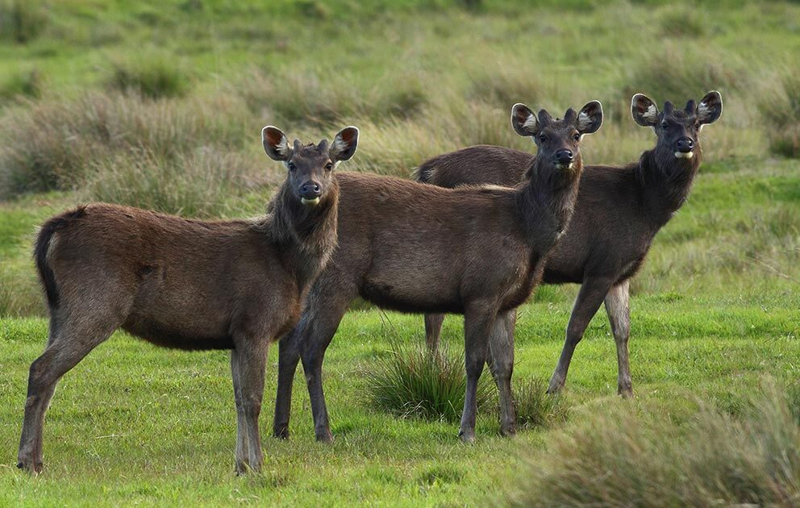

Sri Lanka's Wildlife Tapestry
Sri Lanka, the "Pearl of Indian Ocean" is a haven for diverse wildlife, offering encounters with majestic creatures across its verdant landscapes. While Yala and Wilpattu capture the hearts of many, the island nation boasts a treasure trove of other wildlife locations waiting to be discovered
Unleashing the Wilderness
Sinharaja Rainforest
Immerse yourself in the emerald embrace of Sinharaja, a UNESCO World Heritage Site teeming with life. Witness the acrobatic antics of toque macaques, the elusive beauty of purple-faced langurs, and the vibrant plumage of hornbills flitting through the ancient canopy
Minneriya National Park
Witness the awe-inspiring "Gathering of Elephants" during the dry season, where hundreds of these gentle giants converge around the Minneriya tank, a sight etched in the memories of every visitor

Horton Plains National Park
Embark on a misty trek through the cloud forests of Horton Plains, home to the endemic Sri Lankan leopard and the breathtaking Baker's Falls. Hike amidst the rolling hills carpeted in purple rhododendrons and discover the island's unique montane ecosystem
Bundala National Park
Explore the diverse landscapes of Bundala, where lagoons teem with crocodiles and flamingos, grasslands offer sanctuary to elephants and deer, and dry thorn forests provide refuge for the elusive sloth bear

Kumana National Park
Discover the serene beauty of Kumana, a sanctuary for migratory birds and home to the endangered Asian elephant. Glide through the lagoon on a boat safari, marveling at the colorful tapestry of birdlife and the majestic presence of these gentle giants
Unleashing the Wilderness
This table is a glimpse into the diverse wildlife wonders Sri Lanka offers. Each location and species holds a unique story, waiting to be discovered and appreciated. So, pack your sense of adventure, grab your binoculars, and embark on a journey to experience the magic of Sri Lankan wildlife!
| Animal | Interesting Facts | Image |
|---|---|---|
| Sri Lankan Leopard | These elusive big cats boast the highest density of rosettes in the world, making their unique fur patterns like fingerprints. Despite their fearsome reputation, they primarily hunt small prey and play a crucial role in maintaining ecosystem balance |  |
| Sri Lankan Elephant | While known for their impressive size, elephants hold the record for the longest gestation period amongst mammals, carrying their calves for an average of 22 months! Interestingly, their trunks have over 40,000 muscles, allowing them to perform delicate tasks like picking up a single blade of grass | |
| Toque Macaque | These cheeky primates have a secret weapon – their impressive jumping skills! They can leap up to 15 feet between branches, making them acrobatic masters of the rainforest canopy | |
| Purple-faced Langur | While their vibrant facial markings steal the show, purple-faced langurs have another curious trick – their multi-chambered stomach allows them to digest tough leaves, making them essential players in the forest's nutrient cycle | |
| Sri Lankan Sloth Bear | Don't let their name fool you! These surprisingly playful bears use their long claws to dig for termites, their favorite snack. Despite their intimidating claws and teeth, they primarily feed on insects and are actually quite shy creatures | |
| Click Here to learn more about animals in Sri Lanka | ||